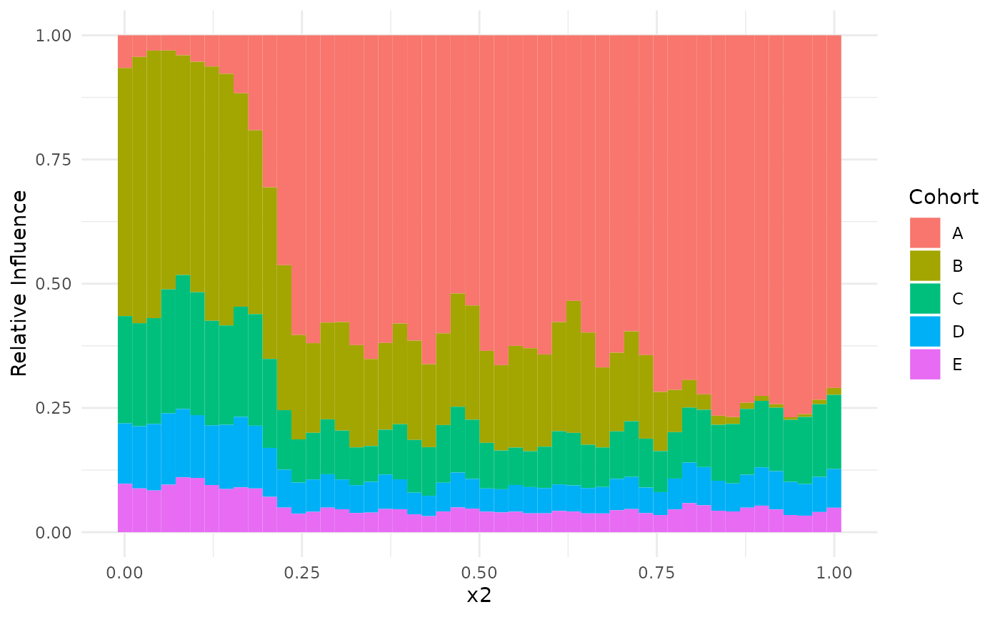

Simulation
Create 5 datasets from standard gam example #1. The noise parameter is scaled, such that the first GAM has lowest noise and the last has highest noise. In a dominance plot, we plot the relative contributions of each dataset on the prediction. By the way we generated the data, we expect largest influence by dataset 1 and lowest by dataset 5.
## simulate datasets
set.seed(123)
datasets <- lapply(
seq_len(num.datasets),
function(x) mgcv::gamSim(scale = x, verbose = FALSE))Delete all data in the first dataset that has values lower than .2 on
the dimension x2. Thus, we expect a low (i.e., zero)
contribution of the first dataset on low values of dimensions
x2.
df <- datasets[[1]]
df[df$x2<0.2,] <- NA
datasets[[1]] <- dfNext, delete all values of the second dataset for large values
(x2>.8).
df <- datasets[[2]]
df[df$x2 > 0.8, ] <- NA
datasets[[2]] <- dfFit GAMs
Next, we fit the individual GAMs for each of the eight datasets.
## fit a generalized additive model to each dataset separately
models <- lapply(datasets, function(dat){
## Full fit using mgcv
gamfit <- mgcv::gam(y ~ s(x0, bs = "cr") + s(x1, bs = "cr") + s(x2, bs = "cr"), data = dat)
## Extract the necessary components for performing a meta-analysis
## This removes all subject-specific data
strip_rawdata(gamfit)
})If we also add names to the list of models, they will pop up as labels in dominance plots.
Meta-Analysis
Then, we analyze the term s(x2). You can increase the
resolution of the next plot by increasing grid_size, but we
keep it low here to reduce the build time of the package.
meta_analysis <- metagam(models, grid_size = 50, terms = "s(x2)")Dominance Analysis
Finally, we create a dominance plot that tells us how much the points
on axis x2 are influenced by the individual GAMs. Since
plot_dominance returns a ggplot object, we can modify the
colors using, e.g. the viridis package. We see that the influence of the
GAMs is graded according to the simulated noise levels. Second, we see
that on the left-hand side, the influence of the first dataset is almost
zero whereas the influence of the second dataset is almost zero on the
righthand side.
plot_dominance(meta_analysis)